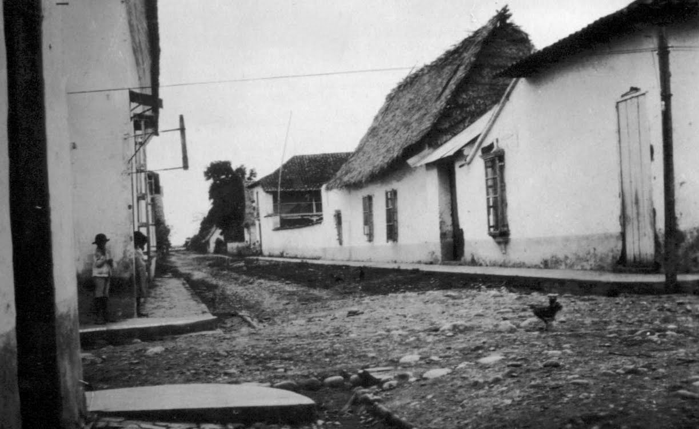

Contexto Histórico
Los inmensos llanos de la Provincia de Barinas representaron la frontera agrícola y el granero cárnico de la colonia. Esta inmensa llanura prosperó gracias a la ganadería extensiva y al cultivo de tabaco de altísima calidad, el cual era sumamente codiciado en los mercados de Europa. A diferencia de la costa central, el control burocrático español aquí era mucho más difuso, lo que propició un activo contrabando a través de los numerosos ríos navegables que conectaban directamente con el Orinoco. La dura vida en Barinas forjó una sociedad llanera muy resiliente, adaptada a las extremas temporadas de sequía e inundación. Además, fue una zona de intensa actividad misionera, donde diversas órdenes religiosas establecieron pueblos para asimilar a las poblaciones indígenas al sistema productivo europeo.
Imagenes
